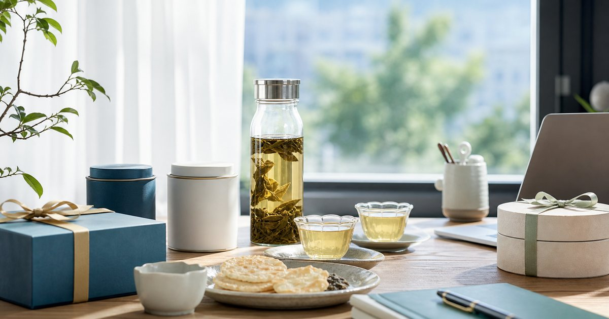

Elite Fashion｜冷泡茶與茶禮盒怎麼選：日常飲用、送禮與下午茶的不同判斷
茶不只分冷泡或熱泡，也要看飲用時間、保存方式與送禮對象。這篇整理日常茶包、冷泡茶與茶禮盒的選擇順序。

日常茶先看沖泡門檻，不是先看包裝
日常茶最好能在忙碌時也沖得穩。茶包、原葉茶、冷泡茶各有位置，關鍵是你是否願意控制水溫、等待時間與清洗器具。
可以把 Teavoya、嘉嶼 CATTEA、ACE TEA、暮朝食粹與台酒旗艦店 放在同一張選擇表裡，但不要只看品牌名或包裝。編輯部會先看它們各自適合的位置：日常補給、待客分享、送禮、備餐、移動攜帶或辦公室共用，再決定哪些值得放進購物清單。
比較實用的順序是先確認 每天飲用的時間點、是否有冰箱與是否需要分享。常見失誤是 被禮盒外觀吸引後才發現日常沖泡太麻煩；在 辦公室茶水間、居家冰箱與下午會議前後 裡，選擇能被穩定使用的品項，通常比一次買齊更重要。
- 日常飲用先選低門檻、易保存的形式。
- 原葉茶適合願意留出沖泡時間的人。
冷泡茶適合預先安排，不適合臨時補救
冷泡茶的優點是乾淨、清爽、容易帶出茶香，但它需要提前準備。若你常在早上出門前手忙腳亂，冷泡茶就應該被安排在前一晚，而不是出門前。
可以把 Teavoya、嘉嶼 CATTEA 與 ACE TEA 放在同一張選擇表裡，但不要只看品牌名或包裝。編輯部會先看它們各自適合的位置：日常補給、待客分享、送禮、備餐、移動攜帶或辦公室共用，再決定哪些值得放進購物清單。
比較實用的順序是先確認 冷泡容器容量、冰箱位置與隔天飲用人數。常見失誤是 買了漂亮冷泡瓶，卻沒有固定清洗和補茶節奏；在 夏季辦公室、居家工作日與週末待客 裡，選擇能被穩定使用的品項，通常比一次買齊更重要。
- 前一晚準備比早上臨時沖更穩。
- 冷泡容器要好清洗，容量不必過大。
下午茶要兼顧點心，不只看茶香
下午茶的茶款要看是否搭配點心、是否會在會議中飲用，以及是否需要讓多人接受。風味太強或太挑人的茶，未必適合辦公室分享。
可以把 ACE TEA、嘉嶼 CATTEA、暮朝食粹與 Teavoya 放在同一張選擇表裡，但不要只看品牌名或包裝。編輯部會先看它們各自適合的位置：日常補給、待客分享、送禮、備餐、移動攜帶或辦公室共用，再決定哪些值得放進購物清單。
比較實用的順序是先確認 茶與米餅、餅乾、水果或簡單點心的搭配。常見失誤是 把自己喜歡的特殊茶款直接當成所有人的下午茶；在 團隊會議、客戶拜訪與工作室待客 裡，選擇能被穩定使用的品項，通常比一次買齊更重要。
- 待客茶可優先選辨識度高、接受度穩的款式。
- 點心若偏甜，茶款可選較清爽的方向。
茶禮盒要把收禮者的使用習慣放在第一位
送茶最怕只送漂亮包裝。對方平常是否喝茶、是否有茶具、是否偏好冷泡或熱泡，會直接影響這份禮能不能被使用。
可以把 Teavoya、嘉嶼 CATTEA、ACE TEA、暮朝食粹與台酒旗艦店 放在同一張選擇表裡，但不要只看品牌名或包裝。編輯部會先看它們各自適合的位置：日常補給、待客分享、送禮、備餐、移動攜帶或辦公室共用，再決定哪些值得放進購物清單。
比較實用的順序是先確認 收禮者的茶具條件、家中人數與是否需要分送。常見失誤是 買了隆重禮盒，卻讓對方不知道該如何沖泡；在 商務拜訪、長輩探訪、搬家祝賀與同事感謝 裡，選擇能被穩定使用的品項，通常比一次買齊更重要。
- 送禮先選使用門檻低、說明清楚的品項。
- 若對方不熟茶，茶包或簡單禮盒會比複雜茶具更友善。
辦公室共用茶要有補貨節奏
共用茶區最好像文具一樣有固定補貨節奏。大家會拿、會喝、會補，才是真正能運作的茶水間。
可以把 Teavoya、ACE TEA、台酒旗艦店與暮朝食粹 放在同一張選擇表裡，但不要只看品牌名或包裝。編輯部會先看它們各自適合的位置：日常補給、待客分享、送禮、備餐、移動攜帶或辦公室共用，再決定哪些值得放進購物清單。
比較實用的順序是先確認 每週消耗量、保存期限與是否需要標示口味。常見失誤是 一次放太多款式，最後只剩零散包裝和過期品；在 共享辦公室、小型公司與工作室來客空間 裡，選擇能被穩定使用的品項，通常比一次買齊更重要。
- 每次只保留少數常喝款式。
- 用小籃或標籤把冷泡、熱泡與送禮備品分開。
茶的採買順序：日常、待客、送禮分三層
把茶分成三層後，採買會簡單很多。第一層是自己每天喝，第二層是辦公室待客，第三層才是送禮或節慶備品。
可以把 Teavoya、嘉嶼 CATTEA、ACE TEA、暮朝食粹與台酒旗艦店 放在同一張選擇表裡，但不要只看品牌名或包裝。編輯部會先看它們各自適合的位置：日常補給、待客分享、送禮、備餐、移動攜帶或辦公室共用，再決定哪些值得放進購物清單。
比較實用的順序是先確認 哪些會在一週內被喝掉，哪些只是偶爾使用。常見失誤是 把日常茶和禮盒混在同一個抽屜，最後不知道哪些該先喝；在 忙碌辦公室、居家冰箱與商務往來的禮品櫃 裡，選擇能被穩定使用的品項，通常比一次買齊更重要。
- 日常茶放最順手的位置。
- 禮盒獨立保存，避免拆散後失去體面。
FAQ
冷泡茶可以當成每天辦公室飲品嗎？
可以，但要先確認冰箱位置、容器清洗與提前準備的習慣。若無法固定前一晚準備，茶包或熱泡茶會更省心。
茶禮盒怎麼避免送得太制式？
先想對方是否常喝茶、是否有茶具、是否需要分送，再選包裝與口味。使用門檻低且說明清楚，通常比稀有茶款更穩。
下午茶適合選味道很特殊的茶嗎？
若是個人飲用可以；若是辦公室分享或待客，建議選接受度較高、容易搭配點心的茶款。
下一步建議
如果你想把茶飲分成日常、待客與送禮三種用途，可以先從冷泡茶、茶包與茶禮盒各挑一種穩定選項。
重要警語
本文為一般茶飲、下午茶與送禮情境整理，不宣稱任何健康或保健效果。食品飲品保存、規格、價格、活動與庫存請以商品頁公告為準。
本文含品牌／商品導購連結；若你透過部分商品連結前往選購，Elite Fashion 可能取得合作收益。本文仍以編輯判斷與使用情境整理為主，價格、規格、活動與庫存請以商品頁公告為準。